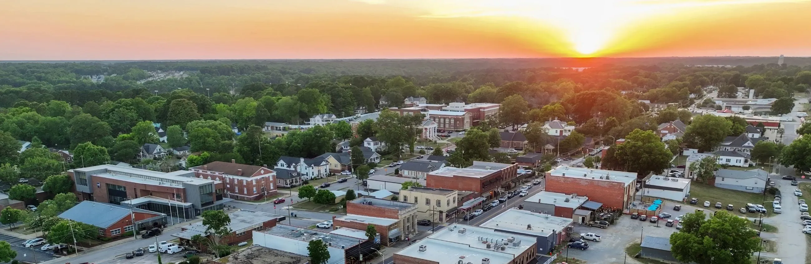
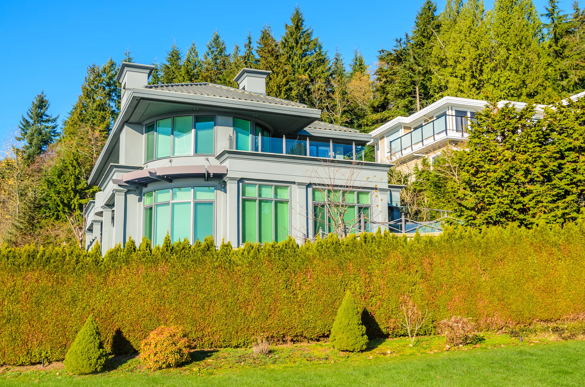
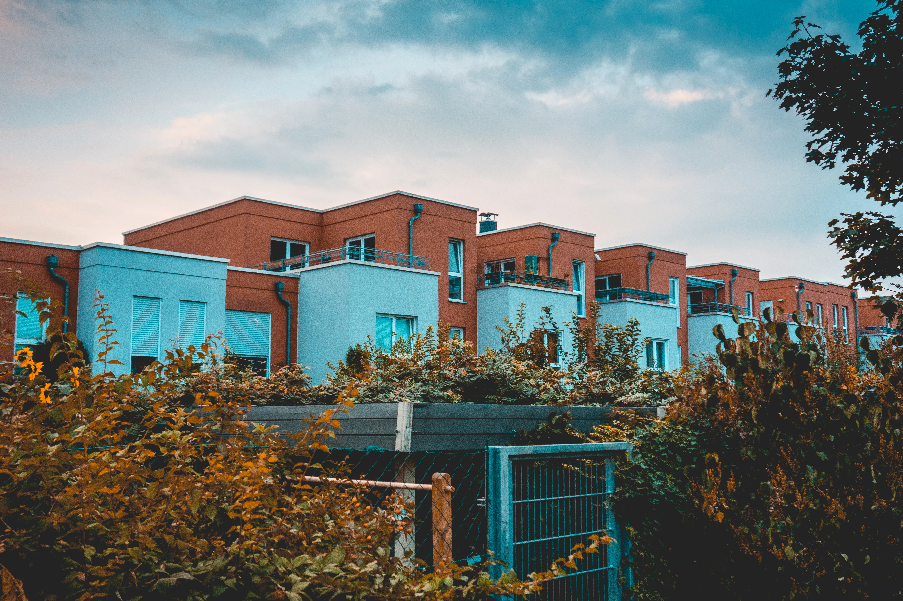
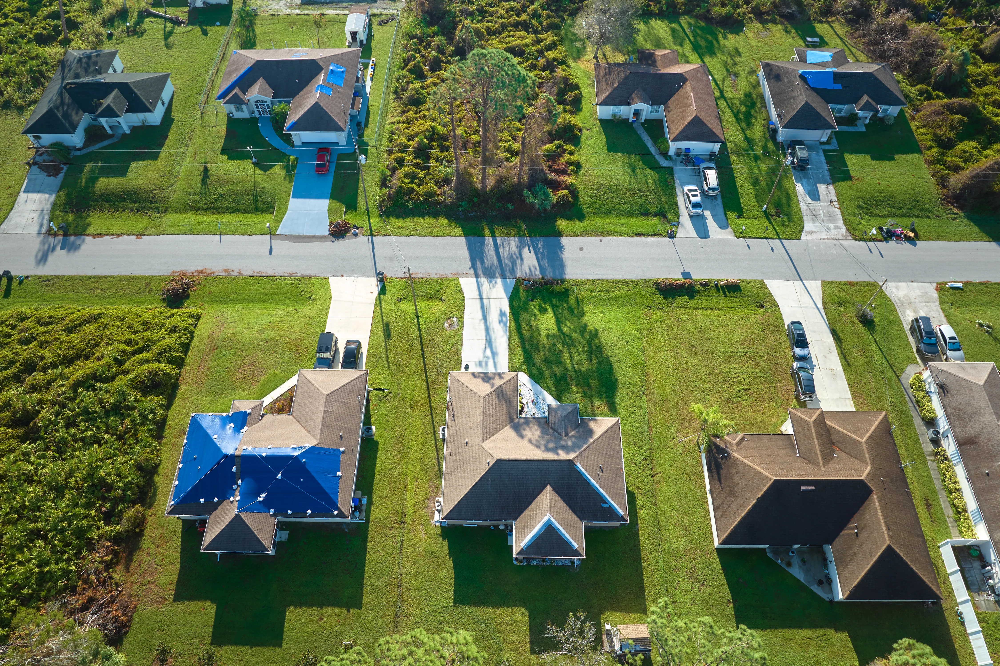

Clayton
Small-town heart, big-city close — where Triangle families put down roots
Thinking about moving to Clayton?
I live and work right here. Let's grab coffee and I'll give you the honest local rundown — neighborhoods, schools, commute, and what your budget really buys.

One of the Triangle's most loved family towns — and it's easy to see why
Twenty minutes southeast of downtown Raleigh, Clayton has become the place young families land when they want more home, more yard, and a real sense of community — without giving up an easy commute. It's the fastest-growing town in Johnston County, and it has roughly doubled in a generation while somehow holding onto its friendly, Main-Street feel.
You get tree-lined neighborhoods, top-rated and fast-improving schools, miles of riverside greenway, and a downtown full of locally-owned restaurants, festivals, and live music — all anchored by a booming biotech job base just down the road. After 20+ years selling homes across this area, I can tell you: Clayton is the one families fall for.
0K+
0
0%
0 min
Why young families love it here
Six of the reasons I hear most often from the families I help move to Clayton.

Strong, improving schools
Johnston County Public Schools post a 90%+ graduation rate, with A-rated Clayton elementaries and brand-new campuses keeping pace with growth.
An easy Triangle commute
About 20 minutes to downtown Raleigh on US-70 and I-40, with new bypass lanes that have shortened drives to RTP and RDU.

A booming job base
Novo Nordisk, Grifols, Bayer, and Caterpillar anchor a fast-growing biotech corridor — thousands of solid careers right in town.

Parks & the Neuse greenway
A 4-mile River Walk along the Neuse, big community parks, ball fields, splash pads, and playgrounds for weekends outside.
A real downtown
Locally-owned restaurants, a craft brewery, the Saturday farmers market, free summer concerts, and festivals all year.

Still attainable
More home for your money than Raleigh, Cary, or Apex — the reason so many first-time and move-up buyers choose Clayton.
Schools that families move here for
Clayton is served by Johnston County Public Schools — one of the fastest-growing and most-improved districts in the state, with a 90%+ four-year graduation rate. The county keeps building new schools to stay ahead of demand, which means smaller, newer campuses for Clayton kids.
- check_circleHighly-rated elementaries: Riverwood, Cooper Academy, Powhatan, River Dell, East & West Clayton
- check_circleClayton, Corinth Holders & Cleveland High options, plus Johnston Charter Academy (K–8)
- check_circleJohnston Community College close by for dual-enrollment and trades
School assignments depend on your exact address — ask me and I'll pull the current zones before you fall for a house.

Parks, greenways & the Neuse River
One of Clayton's quiet superpowers: there's always somewhere to take the kids and the dog. Take your pick.
- forestGreenways & Trails
- sports_soccerParks & Play
- kayakingOn the Water
-

Miles of riverside greenway
Flat, shaded, and stroller-friendly — Clayton's paved trails make it easy to get the whole family outside.
- directions_walkClayton River Walk on the Neuse — a 4-mile, 10-ft-wide paved trail and part of the statewide Mountains-to-Sea Trail.
- hikingSam's Branch Greenway — a gentle, family-friendly path winding close to downtown.
- paletteDowntown Sculpture Trail — a public-art walk linking Town Square to the Riverwalk.
-
Big parks, room to roam
Two flagship community parks anchor weekend sports, birthday parties, and after-school playdates.
- sports_soccerClayton Community Park — 42 acres with ball fields, tennis, sand volleyball, bocce, and two playgrounds.
- parkEast Clayton Community Park — 66 acres of soccer and baseball fields, a one-mile trail, and a planned all-abilities playground.
- water_dropSplash pads & playgrounds all over town to cool off on hot Carolina afternoons.
-

River, links & forest
When you want a bigger adventure, it's all just minutes from your front door.
- kayakingThe Neuse River — easy access for paddling, kayaking, and fishing.
- golf_courseRiverwood Golf Club — a friendly local course right in the community.
- forestClemmons Educational State Forest — hiking and hands-on nature trails a short drive away.
A downtown that actually gives you something to do
Clayton's historic Main Street has quietly become one of the best little downtowns in the Triangle — chef-driven restaurants, a craft brewery, a vintage cocktail lounge, and shops you won't find anywhere else.
- theater_comedyThe Clayton Center — a 600-seat theater hosting concerts, comedy, and community shows
- music_noteDowntown Concert Series — free outdoor live music on Town Square spring through summer
- storefrontClayton Farm & Community Market — every Saturday at Horne Square
- festivalClayton Harvest Festival — a beloved 70+ year tradition each October with rides, a car show & BBQ cook-off
- celebrationChristmas Village & Tree Lighting and the Square-to-Square July 4th street festival
Find your corner of Clayton
Every pocket of town has its own feel. Here are three the families I help gravitate to most — hover in for a closer look.

Clayton real estate snapshot
$0K
$0
~0
0+
A snapshot, not gospel — Clayton still gives you noticeably more home than Raleigh, Cary, or Apex at the same price. For today's exact numbers in the neighborhood you're eyeing, just ask.
Get a Free Market UpdateHomes In & Around Clayton
A few of the homes I'm representing across Clayton and the nearby Triangle right now.

Moving-to-Clayton Questions
Is Clayton a good place to raise a family?
It's one of the best in the Triangle for it. You get improving schools, an unusually deep set of parks and greenways, year-round community events, low crime, and a genuine small-town feel — all 20 minutes from Raleigh. That combination is exactly why young families keep choosing it.
How's the commute to Raleigh and RTP?
Plan on about 20–35 minutes to downtown Raleigh via US-70 or I-40, depending on where in Clayton you are and the time of day. Recent highway upgrades (including the US-70 Clayton Bypass) have noticeably improved drives toward RTP and RDU airport.
Are the schools actually good?
Johnston County Public Schools post a 90%+ graduation rate and several A-rated Clayton elementary schools, and the county keeps opening new campuses to keep class sizes in check. Assignments depend on your exact address, so tell me where you're looking and I'll confirm the current zones.
Is Clayton still affordable?
Compared to Raleigh, Cary, and Apex — yes. Recent median sale prices have hovered in the mid-$300s, and your money simply stretches further here in square footage and lot size. New construction also gives buyers more entry points than in the inner Triangle.
What is there to do on a weekend?
Plenty. The Neuse River Walk and community parks, the Saturday farmers market, free summer concerts on Town Square, the Clayton Center for shows, the fall Harvest Festival, plus a downtown full of locally-owned restaurants and a craft brewery.
New construction or an existing home — which is smarter?
It depends on your timeline, budget, and how much you want to customize. There are great cases for both around Clayton, and with my 20+ years as a licensed contractor I'll walk either one with you and flag anything that could cost you later.

Ready to call Clayton home?
Let's start with a friendly, no-pressure conversation about the neighborhoods, schools, and homes that fit your family.